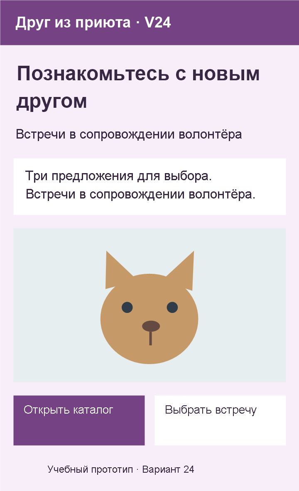
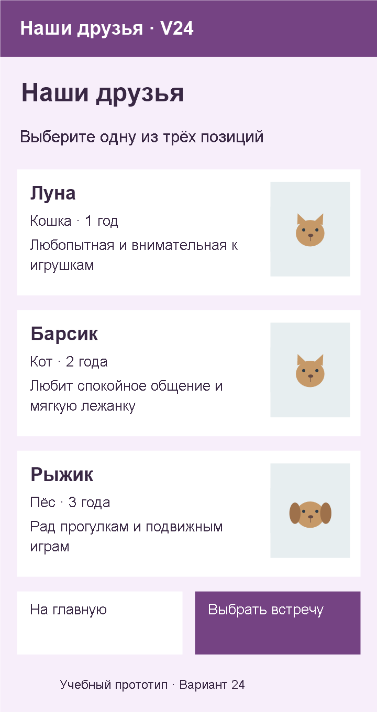
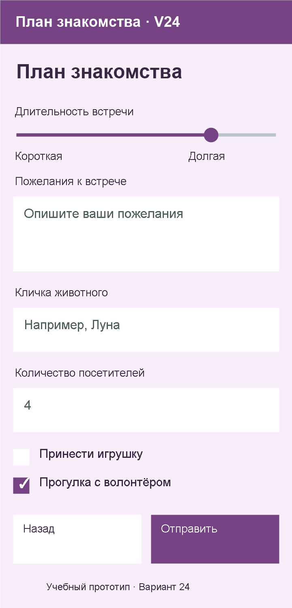
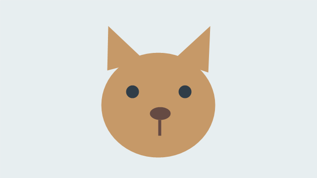
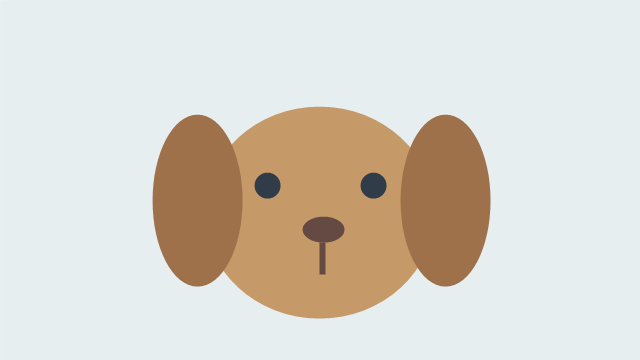

Вариант 24 — Друг из приюта
Ваше веб-приложение — «Друг из приюта · V24». Сохраните номер 24 на всём протяжении работы. Фамилия в приложении не требуется.
Здесь находятся ваши данные: тексты, изображения и цвета. Действия по шагам и код — в статьях занятий. Выполняйте только текущий этап.
Что сделать сейчас
Начните со статьи 10: пример обычной страницы сверху вниз. На 21 октября создаём простую страницу: h1 → p → h2 → p → img. Затем добавляем список и ссылку; после лекции — смысловые части, цвет текста и фон через CSS.
| Занятие | Результат для вашего варианта |
|---|---|
| 10 — самостоятельно создаём страницу | Variant24-web/index.html: название, пояснение, заголовок главной, описание и изображение сверху вниз |
| 11 — проверяем и дополняем страницу | Показ преподавателю и исправления; миникаталог из первых двух названий и ссылка к нему на той же странице |
| 12 — обобщаем HTML и знакомимся с CSS | После лекции — шапка, основное содержание, подвал и внешний style.css с цветом текста и фоном |
Сложная компоновка макетов, кнопки, полный каталог и форма — следующие этапы. JavaScript, обработка заявок и PWA также появятся позднее.
Содержание главной страницы
| Элемент | Ваш текст или изображение |
|---|---|
| Название приложения | Друг из приюта · V24 |
| Заголовок главной | Познакомьтесь с новым другом |
| Короткое пояснение | Встречи в сопровождении волонтёра |
| Описание | Три предложения для выбора. Встречи в сопровождении волонтёра. |
| Основное изображение | item1.png из набора ниже |
| Название перехода к каталогу | Открыть каталог |
| Название перехода к форме | Выбрать встречу |
| Подпись | Учебный прототип · Вариант 24 |
Для пары 10 возьмите первые пять строк таблицы. Для ссылки на паре 11 — «Название перехода к каталогу», для подвала на паре 12 — «Подпись». Переход к форме понадобится позднее.
Содержание каталога
Название — «Наши друзья». Пояснение — «Выберите одну из трёх позиций».
| № | Название | Характеристика | Описание | Файл изображения |
|---|---|---|---|---|
| 1 | Луна | Кошка · 1 год | Любопытная и внимательная к игрушкам | item1.png |
| 2 | Барсик | Кот · 2 года | Любит спокойное общение и мягкую лежанку | item2.png |
| 3 | Рыжик | Пёс · 3 года | Рад прогулкам и подвижным играм | item3.png |
На паре 11 используйте название каталога и первые два названия позиций в указанном порядке. Карточки, характеристики и изображения каталога понадобятся позднее.
Содержание формы — для следующих этапов
Название формы — «План знакомства». Перед каждым полем должна оставаться видимая подпись.
| Подпись | Какие данные нужны | Уточнение |
|---|---|---|
| Пожелания к встрече | Несколько строк текста | Подсказка: Опишите ваши пожелания |
| Кличка животного | Название выбранной позиции | Например, Луна |
| Количество посетителей | Целое количество | Начальное значение: 4 |
Дополнительные возможности выбора:
- Принести игрушку: не выбрано в начале.
- Прогулка с волонтёром: выбрано в начале.
- Длительность встречи: шкала от 1 до 5; начальное значение 4. Края шкалы: «Короткая» и «Долгая».
Действия формы — «Назад» и «Отправить». Это учебная форма: сначала проверяется заполнение, позднее — обработка введённых данных по заданию занятия. Отправка на реальный сервер и сбор персональных данных не требуются.
Ориентир оформления — после изучения CSS
- Фон:
#F7EEFA. Основной текст:#392844. - Основной цвет действий:
#754383, текст на нём — белый. Проверяйте читаемость. - Компоновка каталога: изображения справа. На узком экране допускается перестроение для удобства чтения.
- Главное название выделено, подписи полей читаются, изображения сохраняют пропорции.
- При сужении окна текст и действия остаются доступны; элементы не перекрывают друг друга.
Макеты будущего приложения — следующие этапы
Макеты ниже — будущая цель. Текущий результат на 21 октября — обычная страница из статьи 10 с дополнениями по статье 11 и статье 12. Сложную компоновку этих макетов сейчас воспроизводить не нужно.



Проверка текущего этапа
На паре 11 покажите первую страницу преподавателю, исправьте ошибки и добавьте список со ссылкой.
После пары 12 покажите смысловые части страницы, цвет текста и фон из внешнего файла стилей. Сохраните папку проекта целиком.
Порядок проверки и объяснения — в статье текущего занятия.
Изображения для работы
Сохраните нужные иллюстрации в свой веб-проект по инструкции занятия. Разрешены собственные изображения по тем же сюжетам.



Вернуться к выбору варианта или занятиям курса.